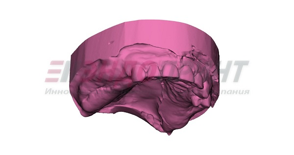
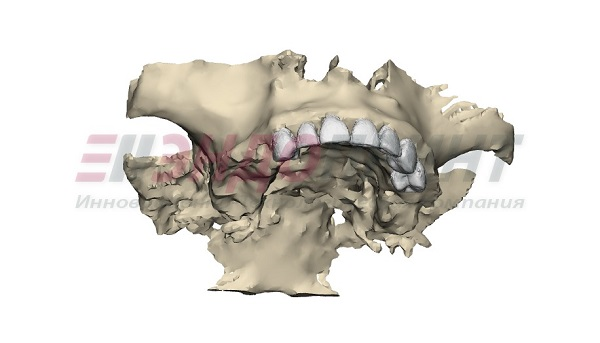
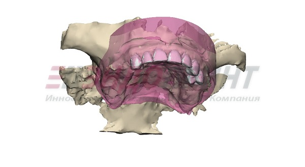
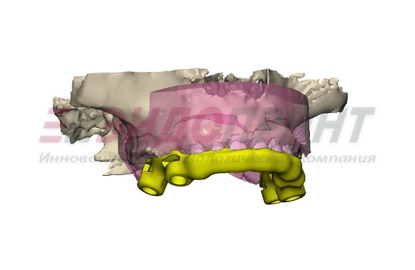
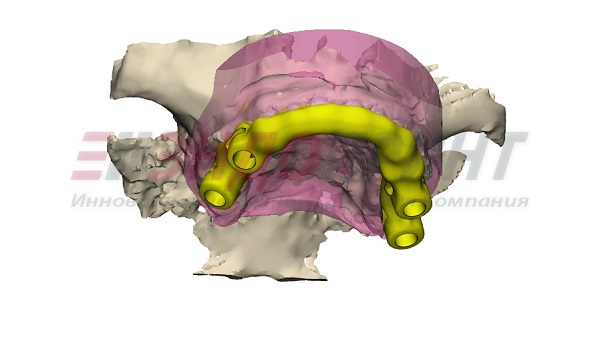
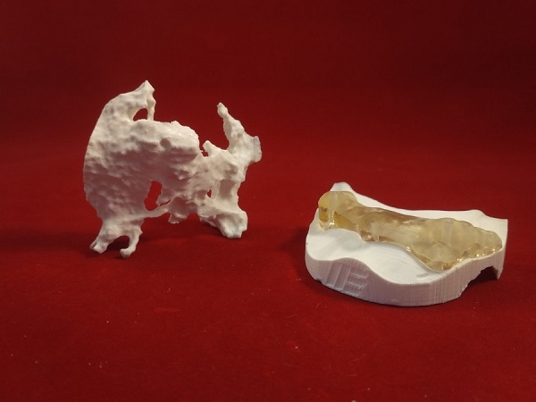
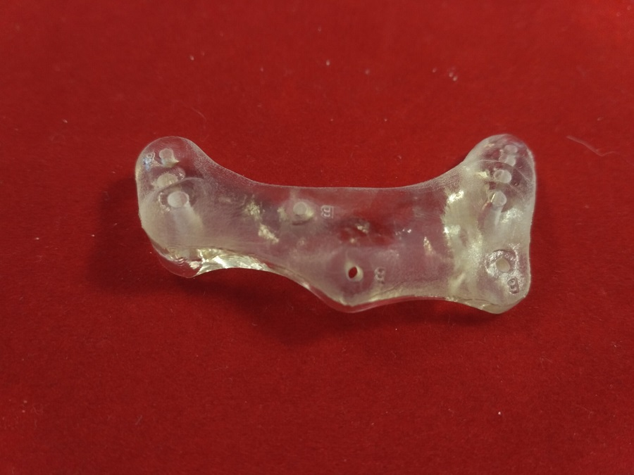

3D – ТЕХНОЛОГИИ ДЛЯ НАВИГАЦИОННОЙ ХИРУРГИИ И ПРОТЕЗИРОВАНИЯ
Наступила эра технологий, которые прочно вошли в нашу жизнь в
различных областях деятельности человека, в том числе, и в медицине,
создав массу возможностей для диагностики и лечения пациентов.
Современное оборудование позволяет «заглянуть внутрь человека»,
выбрать наиболее оптимальный алгоритм лечения, виртуально
спланировать операцию, смоделировать комплект вспомогательных
инструментов, создать уникальные индивидуальные имплантаты и
спрогнозировать результат лечения. Широкое применение находят
цифровые технологии и в ортопедической стоматологии. Традиционный
подход состоит в имплантации по данным компьютерной томографии,
снятии оттисков с протезного ложа, отливки гипсовой модели и
ортопедической конструкции, это достаточно трудоемкий и долгий
процесс.
Благодаря развитию компьютерного моделирования, процесс подготовки ротовой полости
к протезированию с опорой на имплантаты существенно облегчился, позволяя хирургу в процессе работы оценивать и
анализировать клиническую картину, быстро и качественно подготовить ротовую полость пациента к протезированию,
смоделировав хирургический шаблон и необходимый протез, предупреждать возможные осложнения.
Используя виртуальное планирование и хирургические шаблоны можно достичь высокой
точности установки дентальных протезов и сделать результаты лечения предсказуемыми. Тем не менее, немногие
врачи применяют методику компьютерного моделирования в своей работе. Это связано с тем, что далеко не все
врачи владеют навыками работы в подобных программах. В таком случае, в качестве помощника в реализации задач
врача выступает биоинженер.
Все системы компьютерного моделирования представлены несколькими основными
компонентами:
модули для диагностических исследований;
модули для проектирования;
модули для изготовления, то есть 3D печати.
Каждому из указанных модулей соответствует определенный этап подготовки к
протезированию:
Получение цифрового слепка с помощью сканеров или дигитайзеров, применяющих контактные и бесконтактные
методы измерения профиля поверхности.

Рис.1. 3D модель челюсти пациента, полученная путем сканирования
Получение компьютерной томограммы области интереса.
Преобразование биоинженером снимков в 3D модель.

Рис.2. 3D модель челюсти пациента, преобразованная из
компьютерной томограммы
Совмещение биоинженером результатов проведенных диагностических исследований.

Рис.3. 3D модель совмещения методов исследования.
Разработка плана операции и конструирование биоинженером моделей шаблонов и
индивидуальных имплантатов.


Рис.4, 5. 3D модель шаблона.
Изготовление (3D печать) хирургического шаблона и протеза.


Рис.6, 7. Фото готового шаблона и анатомической модели.
В процессе компьютерного моделирования врач совместно с биоинженером учитывают все
анатомические особенности пациента, определяют какие костные структуры категорически нельзя затрагивать, а
какие требуют аугментации, подбирают элементы из линейки стандартных изделий, определяют места и глубину
позиционирования креплений, проектируют конструкцию индивидуального имплантата. Благодаря тесному
взаимодействию врач формирует план операции и осуществляет подготовку к операции. Такая готовность врача
существенно сокращает время проведения операции, снижает вероятность возникновения экстренных ситуаций во
время самой операции, предотвращает многие нежелательные последствия и предупреждает развитие осложнений, а
пациенту позволяет в короткие сроки вернуть зубы и улучшить качество жизни.
автор статьи: Алиева Севиндж,
ассистент кафедры стоматологии хирургической и ЧЛХ ФГБОУ ВО ПСПбГМУ им.ак. И. П. Павлова Минздрава России